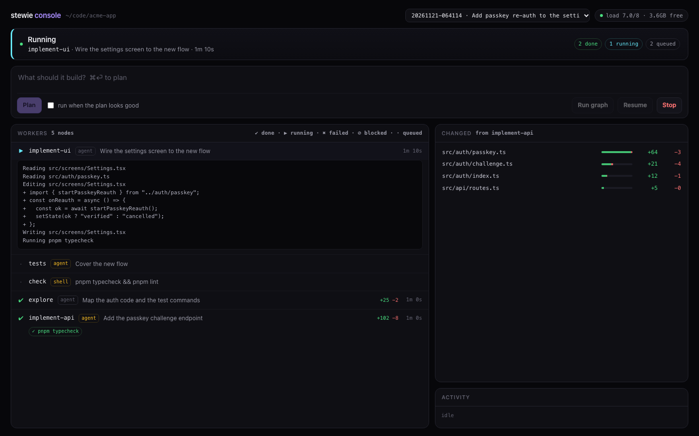
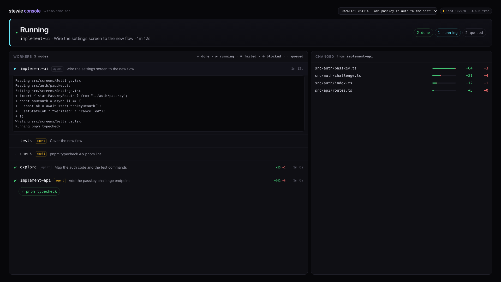

Claude Code, Codex, Grok and OpenCode all do good work in a terminal you can't see. Now the work runs as a graph, on a runner that checks itself, and the status sits on a TV on the wall.

An old LG with a browser pointed at a local page is a fine status board. The part I kept missing was the thing behind it: a runner that takes one goal, splits it into small tasks, runs a couple at a time, and does not lie about being finished.
So the rule is simple. A task carries the command that proves it worked. Tests pass and the task is done; tests fail and it retries once, then fails, and whatever depended on it stops. The model's opinion about its own work doesn't count.
A read-only planner reads the repo and writes a dependency graph. Nothing is touched until you run it.
Before every start it reads free RAM and load average. If the machine is busy it holds, then resumes on its own.
Every task can carry a verify command. Typecheck, lint, the narrow test. Pass or fail, no interpretation.
State is written to disk after every step. Kill the terminal, run resume, and it continues where it stopped.

Point any browser at it. A Raspberry Pi, an old Chromecast, or the TV's own browser if it still has one. It's one page, one poll, no dependencies.
# needs node 20+ and opencode for agent nodes
git clone https://github.com/ryanramtin/stewie.git
cd stewie && npm link
# in any repo
stewie plan "add a --verbose flag to the web server and cover it with a test"
stewie run
stewie serve --tvMIT licensed. Shell-only graphs work without any agent installed.